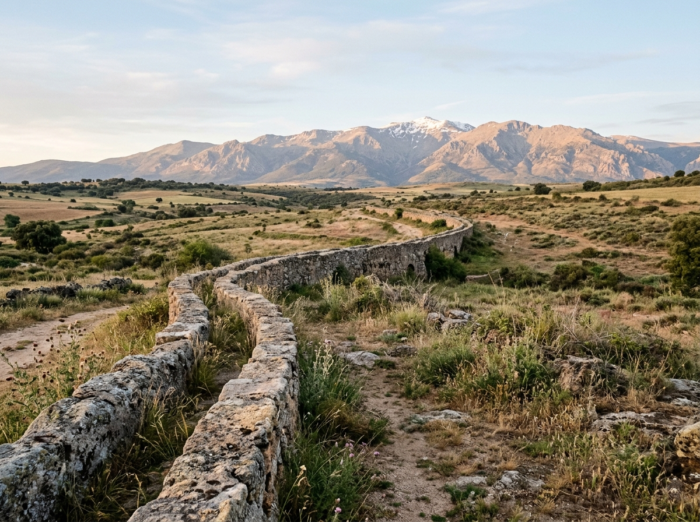
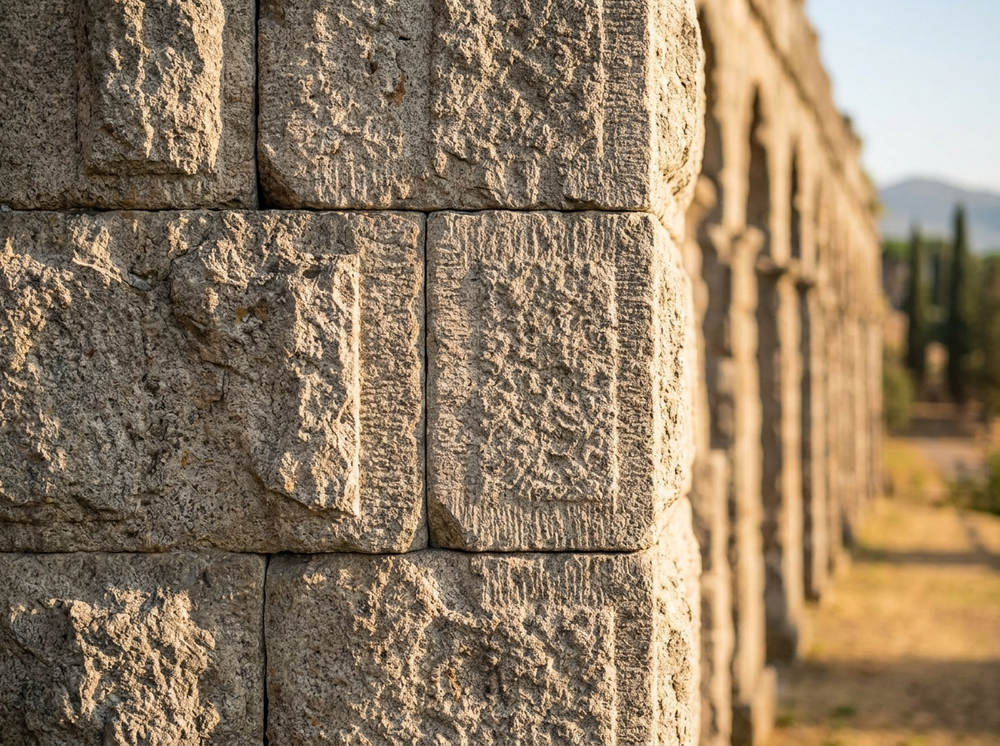

El Acueducto de Segovia: 2.000 Años sin una Gota de Argamasa
En el año 98 después de Cristo, cuando Trajano ascendió al trono imperial, una ciudad en el corazón de la meseta castellana ya tenía resuelto un problema que otras capitales del Imperio nunca lograrían del todo: el agua. Segovia se alza sobre un espolón rocoso entre dos ríos, el Eresma y el Clamores, pero ambos corren muy por debajo del nivel de la ciudad. Beber de ellos significaba bajar cientos de escalones con un cántaro y subirlos de nuevo llenos. Roma, que no toleraba que la geografía le dictara condiciones, resolvió el problema trayendo el agua desde quince kilómetros de distancia, en caída libre, sin una sola bomba.
Quince Kilómetros de Pendiente Calculada al Milímetro
El acueducto de Segovia no es solo el tramo de arcos que hoy fotografían los turistas en la Plaza del Azoguejo. Esa es apenas la parte visible y más espectacular de un sistema de casi quince kilómetros que nace en el manantial de la Fuenfría, en las estribaciones de la Sierra de Guadarrama, y desciende hasta la ciudad con una pendiente media de apenas el uno por ciento. Los ingenieros romanos no tenían niveles láser ni GPS: usaban el chorobates, una mesa nivelada con un canal de agua en la superficie, y el dioptra, un instrumento de visado óptico. Con esas herramientas trazaron un canal —el specus— que debía perder altura de forma constante y suficiente para que el agua fluyera por gravedad, pero no tanto como para que la corriente erosionara el conducto o lo desbordara en las curvas.

La mayor parte del trayecto discurre bajo tierra o a ras de superficie, protegido y casi invisible. Solo en el tramo final, al cruzar el valle que separa la colina donde se asienta Segovia, el terreno se hunde lo suficiente como para obligar a los ingenieros a elevar el canal sobre una estructura de arcos. Ese tramo visible mide 728 metros y alcanza su punto más alto, 28,5 metros, precisamente en la Plaza del Azoguejo, donde el desnivel natural es mayor.
Piedra Sobre Piedra, Sin Argamasa
Lo que distingue al acueducto de Segovia de casi cualquier otra obra pública romana conservada es su método de construcción: los sillares de granito, extraídos de las canteras de Guadarrama, se labraron y ajustaron con tal precisión que se sostienen únicamente por su propio peso y por la fricción entre bloques. No hay argamasa, mortero ni ningún tipo de aglutinante en las juntas de los casi veinte mil bloques que componen la estructura visible. Cada piedra fue cortada a medida para encajar con las contiguas, en un sistema constructivo conocido como opus quadratum.

Esta técnica no era un capricho estético. Un muro de sillares secos, bien trabados, se comporta de manera distinta ante los movimientos sísmicos y las variaciones térmicas que un muro con mortero rígido: la estructura puede absorber pequeños desplazamientos entre bloques sin fisurarse, algo similar a lo que hoy buscan los sistemas de aislamiento sísmico en la construcción moderna. Los arcos de medio punto, dispuestos en dos niveles superpuestos en su tramo más alto, reparten el peso y el empuje lateral hacia los 128 pilares que sostienen el conjunto, cada uno calculado para transmitir la carga hasta una cimentación mínima, ya que el acueducto se apoya directamente sobre roca firme en casi todo su recorrido.
"Ninguna otra fábrica puede compararse con estas obras tan necesarias, por las cuales se conduce a las ciudades una cantidad tan grande de agua."
— Sexto Julio Frontino, comisionado de aguas de Roma, De aquaeductu urbis Romae, s. I dC
Durante siglos se atribuyó la obra a los tiempos de Trajano o Nerva por su estilo y por la calidad del corte, aunque no se ha conservado ninguna inscripción que confirme la fecha exacta ni el nombre de su promotor. Los huecos rectangulares que aún se aprecian en algunos sillares de la fachada, hoy vacíos, probablemente sostuvieron en su día placas de bronce con una dedicatoria imperial, fundidas o arrancadas mucho antes de que llegara la Edad Media.
La Leyenda del Puente del Diablo
Cuando el origen romano de la obra se difuminó en la memoria popular medieval, los segovianos necesitaron una explicación para algo que ya entonces parecía sobrehumano. Nació así la leyenda del Puente del Diablo: una joven aguadora, cansada de subir y bajar cántaros desde la fuente, ofreció su alma al diablo si este construía en una sola noche un canal que trajera el agua hasta su puerta. El diablo aceptó, y trabajó toda la noche colocando piedra sobre piedra a una velocidad imposible. Pero al amanecer, cuando solo faltaba colocar el último sillar, cantó el gallo y el pacto se rompió: el diablo, obligado a desaparecer con la luz del día, dejó la obra inconclusa por un único bloque. La muchacha, arrepentida, pidió a la Virgen que intercediera, y el hueco quedó vacío para siempre como prueba de que ningún trato con el diablo llega a completarse del todo.
La leyenda, por supuesto, no explica nada sobre ingeniería romana, pero explica algo más interesante: hasta qué punto la precisión de la obra resultaba inexplicable para quienes ya no recordaban quién ni cómo la había construido.
Diecinueve Siglos de Servicio Ininterrumpido
Lo verdaderamente extraordinario del acueducto de Segovia no es solo que se mantenga en pie, sino que siguió transportando agua real, de uso cotidiano, hasta bien entrado el siglo XX. Durante casi dos mil años, generaciones de segovianos bebieron del mismo canal que los ingenieros de Trajano habían calculado. La estructura sobrevivió a la caída del Imperio Romano, a la ocupación musulmana de la península, a la Reconquista, y a siglos de uso continuo con mantenimiento mínimo, hasta que en 1520, durante la revuelta de las Comunidades de Castilla, las tropas de Juan Bravo derribaron 36 arcos para frenar el avance de las fuerzas realistas. Los arcos fueron reconstruidos por orden de los Reyes Católicos —en esa sección, y solo en ella, sí se usó argamasa, lo que hoy permite a los arqueólogos distinguir a simple vista la piedra original de la restaurada.
El golpe más reciente llegó en 1974, cuando un camión cisterna chocó contra uno de los pilares y obligó a un proceso de restauración que además retiró el tráfico rodado de la plaza y prohibió definitivamente el paso de vehículos bajo los arcos. En 1985, la UNESCO declaró la ciudad vieja de Segovia y su acueducto Patrimonio de la Humanidad, reconociendo lo que los propios segovianos ya sabían desde hacía diecinueve siglos: que tenían en el centro de su ciudad una máquina hidráulica romana todavía en funcionamiento.
Un Cálculo, No un Milagro
Nada en el acueducto de Segovia fue improvisado. Cada sillar, cada arco, cada metro de pendiente fue resultado de un cálculo de ingeniería hidráulica que los romanos habían perfeccionado en toda la cuenca mediterránea, aplicado aquí con una economía de medios —sin argamasa, sin refuerzos ocultos, solo piedra bien cortada y gravedad— que resulta casi provocadora en su simplicidad. Es fácil mirar los arcos hoy, entre cafeterías y turistas, y pensar en monumento. Los romanos que lo diseñaron pensaban en tubería.
"El acueducto de Segovia no es una ruina que admiramos: es la única obra de ingeniería romana de esta escala que casi nunca dejó de hacer aquello para lo que fue construida."
— Ignacio González Tascón, Ingeniería romana en España, 1987
"Veinte mil sillares de granito, cortados a mano, ajustados sin una gota de argamasa, sosteniendo su propio peso durante diecinueve siglos. Ningún andamio, ninguna bomba: solo piedra y gravedad."
El acueducto de Segovia no es un monumento que Roma dejó atrás. Es una máquina hidráulica que siguió funcionando durante casi dos mil años, y que hoy sigue de pie como el testimonio más elocuente de que la ingeniería romana no improvisaba: calculaba.
Fuentes y Referencias Científicas
- Sexto Julio Frontino — De aquaeductu urbis Romae, s. I dC
- Ignacio González Tascón — Ingeniería romana en España, Ministerio de Obras Públicas, 1987
- A. Trevor Hodge — Roman Aqueducts & Water Supply, Duckworth, 2ª ed., 2002
- UNESCO World Heritage Centre — Ficha de inscripción "Old Town of Segovia and its Aqueduct", 1985
- José Ángel Ceballos Hornero — estudios sobre el trazado y la datación del acueducto de Segovia, Universidad de Valladolid
Continúa leyendo
Maquinaria de Guerra Romana: La Ingeniería del Poder →